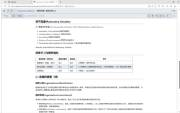

Journal · 2026-04-10
微信聊天记录
吉姆哈克 : py被我搞坏了 2026年4月10日 10:31 万泽宇 : [疑问][疑问][疑问][疑问] 2026年4月10日 10:31 吉姆哈克 : 你看你电脑能运行不？ 2026年4月10日 10:32 吉姆哈克 : 我貌似把Python Launcher卸载了 2026年4月10日 10:35 吉姆哈克 : python "C:\Users\NewtN\Desktop\MD5_Hash_1.0.1\app.py" 2026年4月10日 10:35
吉姆哈克 : 这也行不通 2026年4月10日 10:36
吉姆哈克 : 我又修好了 引用：我貌似把Python Launcher卸载了 2026年4月10日 10:38 吉姆哈克 : 可以讲解了 2026年4月10日 10:38 焦嘉禾 : 可以了吗 2026年4月10日 10:39 吉姆哈克 : 我们是第四组吗？ 2026年4月10日 10:42 焦嘉禾 : 是 2026年4月10日 10:42
吉姆哈克 : [图片] 2026年4月10日 12:19 吉姆哈克 : [图片] 2026年4月10日 12:19 吉姆哈克 : [图片] 2026年4月10日 12:19 吉姆哈克 : [图片] 2026年4月10日 12:19 吉姆哈克 : [图片] 2026年4月10日 12:19 吉姆哈克 : [图片] 2026年4月10日 12:19 吉姆哈克 : [图片] 2026年4月10日 12:19 吉姆哈克 : [图片] 2026年4月10日 12:19 吉姆哈克 : [图片] 2026年4月10日 12:19 吉姆哈克 : [图片] 2026年4月10日 12:19 吉姆哈克 : [图片] 2026年4月10日 12:19 吉姆哈克 : [图片] 2026年4月10日 12:19 吉姆哈克 : [图片] 2026年4月10日 12:19 吉姆哈克 : 我把本地的OpenClaw，还有六个bot，抢救回来了！ 2026年4月10日 12:19 吉姆哈克 : 2026.3.31，我打算用到养老了 2026年4月10日 12:20 吉姆哈克 : [图片] 2026年4月10日 12:20 吉姆哈克 : 但目前出现了一点问题 2026年4月10日 12:21 吉姆哈克 : 他安装不了技能了 2026年4月10日 12:21 吉姆哈克 : 我不行了，我伤心死了 2026年4月10日 12:33 吉姆哈克 : 养了又死，死了又养 2026年4月10日 12:33 吉姆哈克 : 那再来一次君子协议吗？ 2026年4月10日 12:33
吉姆哈克 : 但目前出现了一点问题 2026年4月10日 12:21 吉姆哈克 : 他安装不了技能了 2026年4月10日 12:21 吉姆哈克 : 我不行了，我伤心死了 2026年4月10日 12:33 吉姆哈克 : 养了又死，死了又养 2026年4月10日 12:33 吉姆哈克 : 那再来一次君子协议吗？ 2026年4月10日 12:33 吉姆哈克 : [叹气][叹气][叹气] 2026年4月10日 12:33 吉姆哈克 : 我再也不更新了 2026年4月10日 12:36 吉姆哈克 : 再也不让他操作他自己 2026年4月10日 12:36 吉姆哈克 : 小龙虾自己搓自己，还能搓坏 2026年4月10日 12:37 吉姆哈克 : [流泪][流泪][流泪] 2026年4月10日 12:37 龙悦科技小马哥 : [旺柴][旺柴][旺柴] 2026年4月10日 13:06 龙悦科技小马哥 : 哈哈哈哈哈 2026年4月10日 13:06 龙悦科技小马哥 : 可以的 小伙子 2026年4月10日 13:06

万泽宇 : 这个怎么样 2026年4月10日 15:54 吉姆哈克 : 引用： 2026年4月10日 15:54 吉姆哈克 : 但是会不会撞题欸？ 2026年4月10日 15:55 吉姆哈克 : 纽约太有名了 2026年4月10日 15:55 吉姆哈克 : 陈老师会提什么问题？ 引用： 2026年4月10日 15:55 吉姆哈克 : 根本没有问课件内容 2026年4月10日 15:58 吉姆哈克 : 应该不会撞题吧 引用：这个怎么样 2026年4月10日 15:59 吉姆哈克 : 要是真撞选题了，我们就讲得酣畅淋漓一点 2026年4月10日 15:59 万泽宇 : 组员1 (组长) 框架与理论统筹 1. 确定报告逻辑主线2. 撰写理论分析（RBM/电子政务）3. 设计汇报互动问题 逻辑严密性、理论深度 整理标准格式参考文献 组员2、组长 官方数据分析师 1. 下载 2023/2024 MMR 报告及数据2. 提取安全、卫生等核心指标趋势图3. 数据翻译与解读 真实数据图表、趋势分析 整理标准格式参考文献（含 Dashboard 截图） 组员3、4 政策与评价研究员 1. 挖掘 2021 年后改革细节（如市民反馈机制）2. 搜集英文媒体（NY Times等）评价 案例深度、正反视角 整理标准格式参考文献（含 Dashboard 截图） 2026年4月10日 16:14 万泽宇 : 分工了哈 2026年4月10日 16:15 蒋鹏伟 : 我来组员3、4那个任务 2026年4月10日 16:17
吉姆哈克 : Hihi 2026年4月10日 18:31 吉姆哈克 : 哥们儿 2026年4月10日 18:31 吉姆哈克 : 请问班长坐在哪里呀？ 2026年4月10日 18:31 吉姆哈克 : [疑问][疑问][疑问] 2026年4月10日 18:31 吉姆哈克 : 我刚知道了 2026年4月10日 18:33 吉姆哈克 : 太感谢你了！ 2026年4月10日 18:33 张旭 : 没看消息 2026年4月10日 18:34
阿力 行管 : 整理一下 然后晚上发到群里 2026年4月10日 19:17 阿力 行管 : [呲牙][呲牙] 2026年4月10日 19:17 吉姆哈克 : 我周五周六 2026年4月10日 19:17 吉姆哈克 : 全天满课 2026年4月10日 19:17 吉姆哈克 : 我打算明天中午 2026年4月10日 19:17 吉姆哈克 : 极限一波 2026年4月10日 19:17 吉姆哈克 : 去华安里 2026年4月10日 19:17 吉姆哈克 : 在龙的基础上 2026年4月10日 19:17 阿力 行管 : 我感觉 2026年4月10日 19:17 阿力 行管 : 没必要去了 2026年4月10日 19:17 吉姆哈克 : 补拍一些细节照片 引用：在龙的基础上 2026年4月10日 19:17
吉姆哈克 : 好的好的，九点钟聊啦 引用：九点 2026年4月10日 16:02 龙悦科技小马哥 : 嗯 2026年4月10日 16:02 吉姆哈克 : 2026.3.31 2026年4月10日 20:57 吉姆哈克 : 能要求他自己安装技能吗？ 2026年4月10日 20:58 吉姆哈克 : 大伙汁 2026年4月10日 21:00 吉姆哈克 : 在吗？ 2026年4月10日 21:00 吉姆哈克 : 还有那个飞书龙虾机器人 2026年4月10日 21:02 吉姆哈克 : 是不是不能发文件到手机上啊？ 2026年4月10日 21:02 吉姆哈克 : 九点钟到了 2026年4月10日 21:02 吉姆哈克 : 好吧，你生意真好 2026年4月10日 21:11 吉姆哈克 : 我先刷会儿哔哩 2026年4月10日 21:12 吉姆哈克 : 还有，那个定时任务 2026年4月10日 21:14
吉姆哈克 : 是不是不能发文件到手机上啊？ 2026年4月10日 21:02 吉姆哈克 : 九点钟到了 2026年4月10日 21:02 吉姆哈克 : 好吧，你生意真好 2026年4月10日 21:11 吉姆哈克 : 我先刷会儿哔哩 2026年4月10日 21:12 吉姆哈克 : 还有，那个定时任务 2026年4月10日 21:14 吉姆哈克 : 你会设置吗？ 2026年4月10日 21:14 吉姆哈克 : 能让龙虾每隔半小时直接跑吗？ 2026年4月10日 21:14 吉姆哈克 : 我就默认Token不要钱好吧 2026年4月10日 21:15 吉姆哈克 : 反正要么包月，要么充了钱 2026年4月10日 21:15 吉姆哈克 : 直接榨干Token的最后一滴价值就行了 2026年4月10日 21:16 吉姆哈克 : 我想让他，定时给我发送实时热点新闻 引用：还有，那个定时任务 2026年4月10日 21:17 吉姆哈克 : 或者定时运行一个小爬虫 2026年4月10日 21:18 吉姆哈克 : [语音或视频通话] 2026年4月10日 21:30 龙悦科技小马哥 : 来了 2026年4月10日 21:31 吉姆哈克 : 所以我是要发远程吗？ 2026年4月10日 21:31